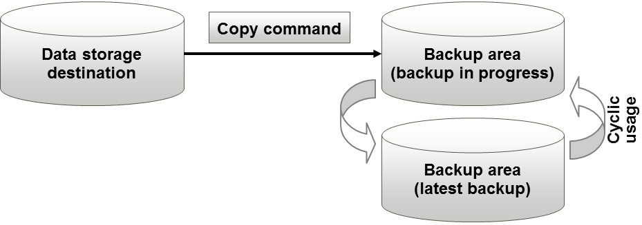
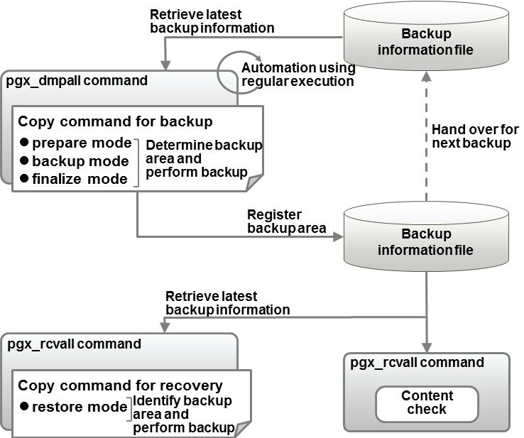

This section describes the configuration of the copy command for backup and recovery.
Cyclic usage of the backup area
Prepare two backup areas for the copy command in case an issue affects the data storage destination during backup. The copy command performs backup while cyclically using these backup areas.

Note
The backup data storage destination cannot be used as these backup areas used by the copy command.
Backup using the backup information file
The copy command must determine the backup destination on each backup, as it is necessary to cycle through the backup areas. Backup can be automated by using the backup information file, which contains information about the backup destination.

Information
The backup information file is prepared in the backup data storage destination by the pgx_dmpall command, and contains information that can be read or updated by the copy command. This file is managed by associating it with the latest backup successfully completed by the pgx_dmpall command, so the latest backup information relating to the copy command registered by the user can be retrieved. Additionally, the content of the backup information file can be displayed using the pgx_rcvall command.
Configuration of the copy command for backup
The pgx_dmpall command calls the copy command for backup after execution for the three modes below. It is therefore necessary for the copy command for backup to implement the required processing for each of the modes.
prepare mode
Determines which of the two backup areas will be used for the current backup.
The backup area to be used for the current backup is determined by reading the information relating to the latest backup destination where the backup information file was written to during the previous backup.
backup mode
Performs backup on the backup area determined by prepare mode, using any copy method.
finalize mode
Writes information relating to the destination of the current backup to the backup information file.
This enables the prepare mode to check the destination of the previous backup during the next backup.
Note
The user can use any method to hand over backup information between modes within the copy command, such as creating temporary files.
Configuration of the copy command for recovery
The pgx_rcvall command calls the copy command for recovery for the mode below. It is therefore necessary for the copy command for recovery to implement the required processing for the mode.
restore mode
Any copy method can be used to implement restore from the backup destination retrieved using the copy command for backup.
Point
By referring to the mode assigned to the copy command as an argument, backup and recovery can be implemented using a single copy command.
Example
Using a bash script
case $1 in prepare) processingRequiredForPrepareMode ;; backup) processingRequiredForBackupMode ;; finalize) processingRequiredForFinalizeMode ;; restore) processingRequiredForRestoreMode ;;esac
Point
A sample script that backs up the database cluster and tablespace directory to a specific directory is supplied to demonstrate how to write a copy command.
The sample is stored in the directory below:
/installDir/share/copy_command.archive.sh.sampleA sample script that uses OPC (an advanced copy feature of Fujitsu Storage ETERNUS disk array) is supplied. Refer to "Appendix I Copy Command Samples that Use the Advanced Copy Feature of the ETERNUS Disk Array" for details.
The samples cannot be used on SLES 12.